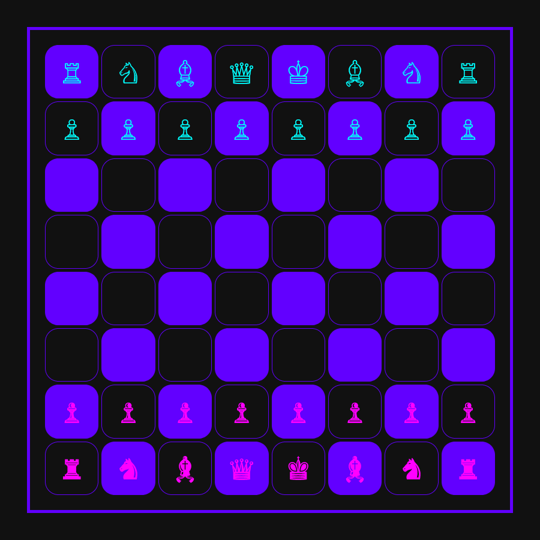

Shakki

Tehthävä
- Tee kansio d21, mihin lisäät index.html ja style.css
- Alusta html dokumentti ja linkitä style.css
- Lataa ja linkitä favicon
- tee body tagin sisälle div class square
- tee sen sisälle 8x8 taulukko
- lisää kuhunkin taulukon soluun (joihin tulee nappi) span tagi, jolla on class white/black riippuen laudan puolesta
- lisää span tagin sisälle nappia vastaava kuvake
- voit käyttää emojia https://emojipedia.org/search/?q=chess
favicon (png)
- Lataa ja linkitä chess.js dokumentin headiin
<script src="chess.js"></script> - Kutsu aloitusfunktiota ennen body-tagin sulkeutumista
<script>init()</script> - Skripti toteuttaa, sen että nappia voi siirtää, mutta ei ymmärrä muuten shakin sääntöjä
- Jos olet mestari JavaScriptissä, niin toteuta siirron laillisuuden tarkistus ;)
CSS
- :root
- valitse teemaväri, jona tallennat muuttujana
- body
- aseta tumma taustaväri
- nollaa marginaalit
- tee bodystä flex elementti
- keskitä elementit pysty- ja vaakasuunnassa
- aseta korkeudeksi 100vh
- kasvata fontin koko, (nappulat fontti-ikoneita)
- aseta tekstin väriksi vaalea ja fontiksi Arial
- Muuta padding ja reunaviivan paksuus sisältymään divin ulkomittoihin
- .square
- säädetään pelilaudan kokoa
- aseta position: relative; koska tablessa käytetään position: absolute;
- lisää reunaviivat
- tee .square:sta flex-elementti ja keskitä sisältö vaaja ja pystysuunnassa
- aseta korkeus ja leveys 90vh
- table
- aseta position: absolute;
- leveys ja korkeus 90%
- voit muuttaa ruutujen välistystä border-spacing: 5px;
- table tr td
- pyöristä ruutujen kulmat halutessasi
- taulukon solu on referenssinä spanille
- position: relative;
- ylimenevät napin osat saavat näkyä
- overflow: visible;
- table tr td span
- nappi on span tagin sisällä
- keskitä nappi ruudun keskelle
- ja tee siitä vielä flex elementti
- keskitä flex sisältö pysty ja vaakasuunnassa
- nyt ruutujen pitäisi pysyä neliönä riippumattaa onko ruudussa nappi vai ei
- käytä table tr / table td ja :nth-child(even) / :nth-child(odd)
- käskyjä värittääksesi ruudukon solut shakkimaisesti vuorovärein
- .black
- muuta napin väri color-parametrillä
- .white
- muuta napin väri color-parametrillä
- table tr td:hover
- lisää hitaasti välkkyvä animaatio kun hiiri on jonkun ruudun päällä
- määritele animaatio @keyframes kohdassa
Tallenna GitHubiin